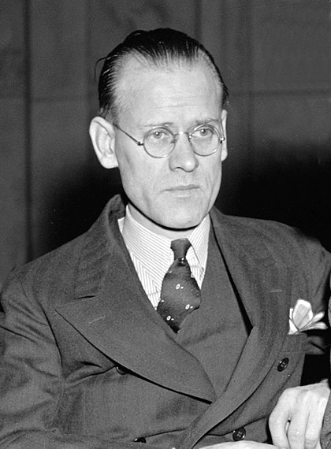

The City of Rigby
The City of Rigby was founded in 1884 by pioneers from The Church of
Jesus Christ of Latter-Day Saints. The settlement was named after
William F. Rigby, a prominent member of the settlers. Rigby is the
county seat of Jefferson County.
Rigby is also known as the "Birthplace of Television", as Philo T. Farnsworth, the inventor of the television tube, spent his childhood in Rigby, and became very interested in electronics while living here. Though Farnsworth's original patent wasn't filed until he moved to Los Angeles in 1926, it is believed that he would not have been able to invent the tube without first moving to Rigby and falling in love with electronics. There is a museum in the town dedicated to him, and an entire exhibit about his invention on display year round.

Rigby is also known as the "Birthplace of Television", as Philo T. Farnsworth, the inventor of the television tube, spent his childhood in Rigby, and became very interested in electronics while living here. Though Farnsworth's original patent wasn't filed until he moved to Los Angeles in 1926, it is believed that he would not have been able to invent the tube without first moving to Rigby and falling in love with electronics. There is a museum in the town dedicated to him, and an entire exhibit about his invention on display year round.
The population of Rigby as of the 2019 census is 4,117.
Rigby High School's mascot is the Trojan, and their sports teams have
taken home multiple state championship titles in recent years.
Rigby is also home to a number of potato warehouses, as the community
is known for being involved in Idaho's number one export: potatoes. Most
people in Rigby work in the agriculture industry, and those that do
not commute to the nearby towns of Rexburg and Idaho Falls. Rigby is
also a popular place to live for those working at the Idaho National
Laboratory.